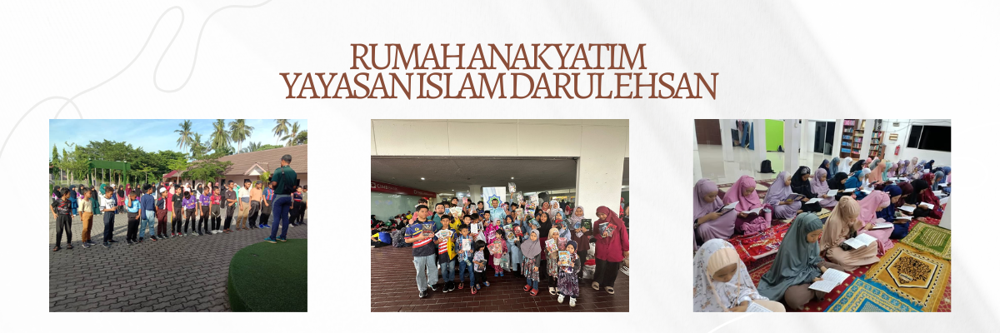
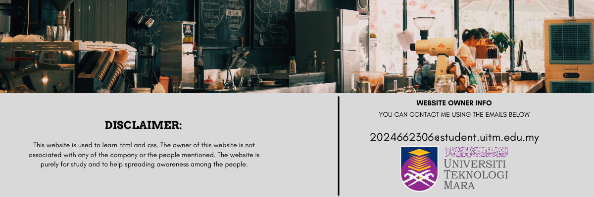
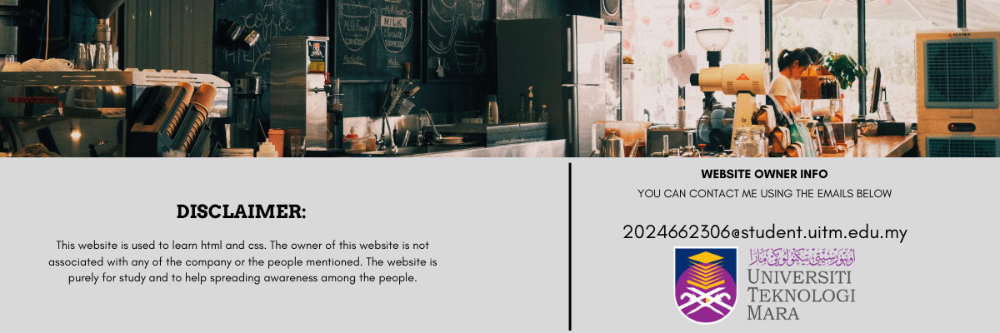

YAYASAN ISLAM DARUL EHSAN
Every child deserves a loving family. That’s why Rumah Anak Yatim YAYASAN ISLAM DARUL EHSAN explores every avenue to reunite children with a parent or relative, if possible, and puts programs in place to facilitate adoptions.
Your Contribution Brings Hope
Donations are used to cover basic needs, educational support, healthcare, and the daily welfare of children under our care. With your help, we can continue to improve their lives and empower them for a brighter future.
An orphanage is a residential care institution dedicated to the well-being of children who have lost their parents or whose families are unable or unwilling to provide for them. In situations where no parent, grandparent, godparent, or extended family member can take responsibility, the child becomes a ward of the state.
Click Here to DonateYour Contribution Brings Hope
Donations are used to cover basic needs, educational support, healthcare, and the daily welfare of children under our care. With your help, we can continue to improve their lives and empower them for a brighter future.
Orphanages, like Yayasan Islam Darul Ehsan (YIDE), provide a safe, nurturing environment where these children can receive shelter, care, education, and emotional support—ensuring they are not just protected, but given every opportunity to thrive.
Bank Transfer (Preferred Method)
A direct way to support us. Please ensure you include your name for receipt purposes.
- MAYBANK: 562106866637
- BANK ISLAM: 12234010007330
- RHB: 26262500011439
 
